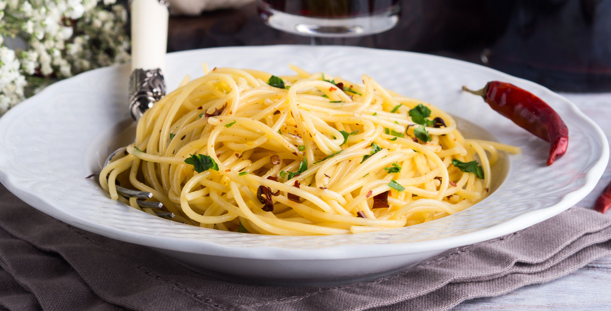

Spaghetti Aglio e Olio


15 Min.

simpel

13.08.2024
Zutaten für
-
200g Spaghetti
-
4 Knoblauchzehen
-
50ml Olivenöl
-
1 Prise Chilliflocken
-
Salz nach belieben
Zubereitung
ca. 15 min
Gesamtzeit ca. 15 Minuten
Die Spaghetti in reichlich gesalzenem Wasser al dente kochen. Währenddessen den Knoblauch in feine Scheiben schneiden und in einer Pfanne mit Olivenöl bei mittlerer Hitze goldbraun anbraten. Die Chiliflocken hinzugeben und kurz mitrösten. Die Spaghetti abgießen, dabei etwas Nudelwasser auffangen. Die abgetropften Spaghetti in die Pfanne zum Knoblauchöl geben, gut durchschwenken und bei Bedarf etwas Nudelwasser hinzufügen, um eine sämige Sauce zu erhalten. Mit Salz abschmecken und mit gehackter Petersilie servieren.
Rezept erstellt von
Christian